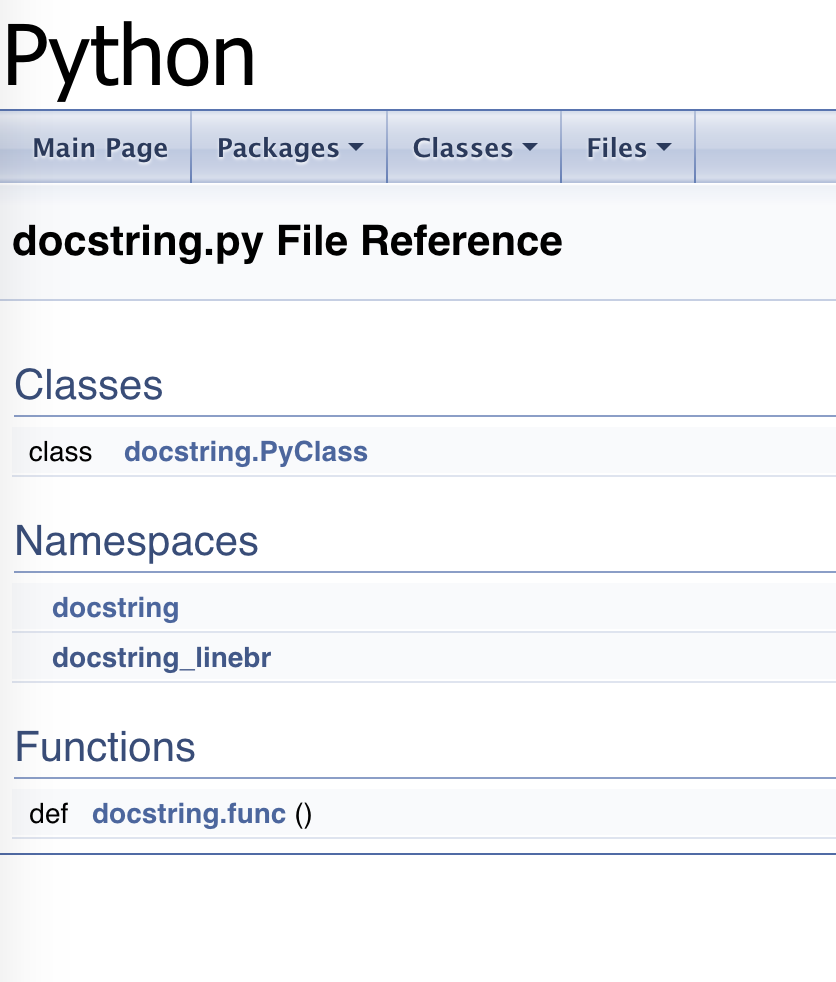
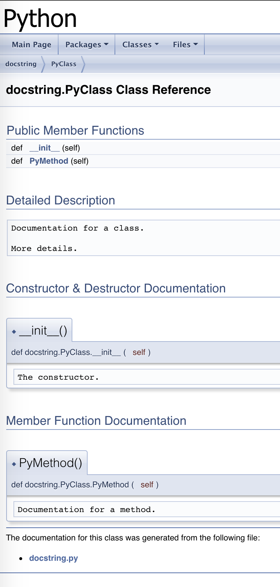
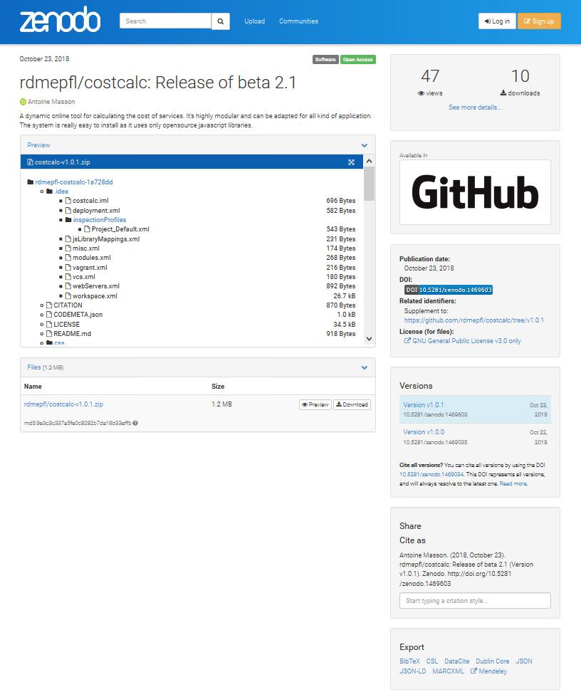
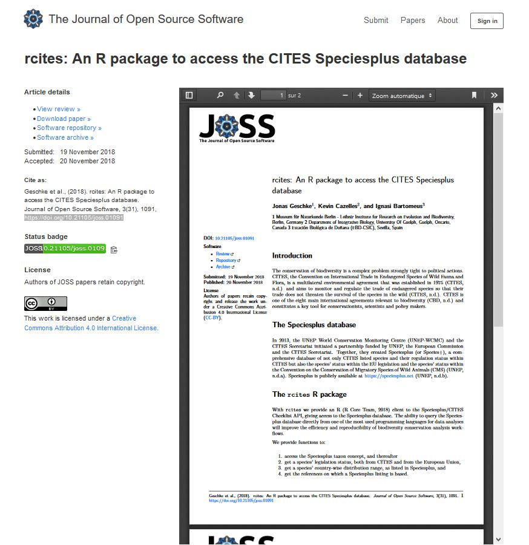
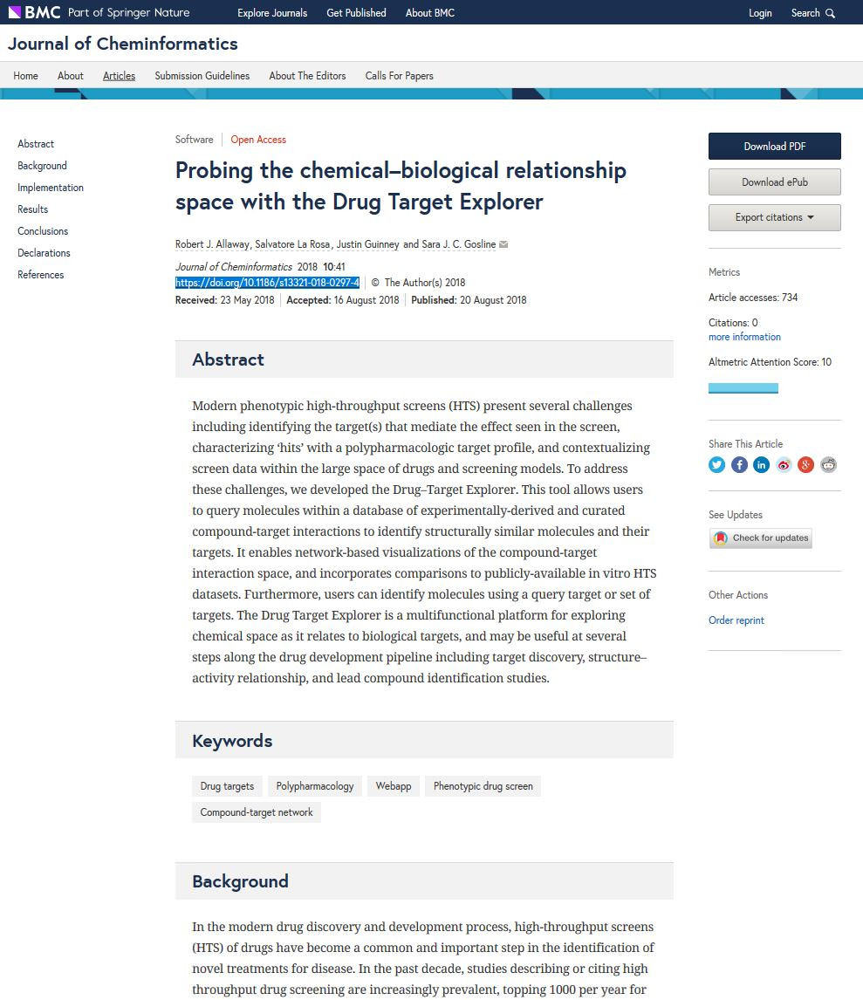

Understand others’ work
External communication
Identify code/software producers (myself or fellow coders)
Contribute/Get contributions
Credit/Be credited
Sharing and reusing IS NOT an invitation to plagiarism.
You still have to cite, and use the code according to the license
Software indexing/retrieval in :
software platforms
repositories
libraries
Software long term preservation/archiving
Description of the source code
Description of the software
Including * Code explanations
Usage
Author
Contact infos
UPIds (Unique Persistent IDentifiers)
License
…
Choose a licence and stick to it.
It can be very painful to change a licence (need to ask all the contributors).
Here is the list of Open Source Licences as suggested by the TTO https://tto.epfl.ch/scientists/software/choose_the_license/open_source_licenses/
Short
Permissive
No warranty
Short
Permissive
Trademarks prohibited
No warranty
Permissive
Patents allowed
No warranty
Copyleft license
Patents allowed
Viral
Sharing libraries under the same terms
Mix of different licenses allowed
Strong copyleft
Patents allowed
Viral
Dependencies documentation management
embedded documentation
supported documentation with a README file
supported documentation with metadata
documentation AND publication with a software paper
comments & annotations
documentation generation
"""@package docstring
Documentation for this module.
More details.
"""
def func():
"""Documentation for a function.
More details.
"""
pass
class PyClass:
"""Documentation for a class.
More details.
"""
def __init__(self):
"""The constructor."""
self._memVar = 0;
def PyMethod(self):
"""Documentation for a method."""
pass 
README file shall include
$project
========
$project will solve your problem of where to start with documentation,
by providing a basic explanation of how to do it easily.
Look how easy it is to use:
import project
# Get your stuff done
project.do_stuff()
Features
--------
- Be awesome
- Make things faster
Installation
--------
Install $project by running:
install project
Contribute
--------
- Issue Tracker: github.com/$project/$project/issues
- Source Code: github.com/$project/$project
Support
--------
If you are having issues, please let us know.
We have a mailing list located at: project@google-groups.com
License
--------
The project is licensed under the BSD license.DOAP (Description Of A Project) description files
CITATION files
(2 examples: CFF and codemeta)
EXAMPLE 1 : Citation File Format (CFF) file (yaml)
cff-version: 1.0.3
message: If you use this software, please cite it as below.
authors:
- family-names: Masson
given-names: Antoine
orcid: https://orcid.org/0000-0002-7993-5698
affiliation: Ecole Polytechnique Fédérale de Lausanne, Library
email: antoine.masson@epfl.ch
title: Cost Calculator
version: beta 2.1
doi: 10.5281/zenodo.1469034
date-released: 2018-10-08
repository-code: https://c4science.ch/source/costcalc/repository/master/
url: https://rdmepfl.github.io/costcalc/
keywords:
- research data
- storage
- cost estimate
- planning
abstract: A dynamic online tool for calculating the cost of research data storage services. It's highly modular and can be adapted for all kind of application. The system is really easy to install as it uses only opensource javascript libraries.
license: GPL-3.0-onlyEXAMPLE 2 : codemeta file (json-ld)
{
"@context": "https://doi.org/10.5063/SCHEMA/CODEMETA-1.0",
"@type": "Code",
"author": [
{
"@type": "Person",
"name": "Antoine Masson",
"@id": "https://orcid.org/0000-0002-7993-5698",
"affiliation": "Ecole Polytechnique Fédérale de Lausanne, Library",
"email": "antoine.masson@epfl.ch"
}
],
"name": "Cost Calculator",
"softwareVersion": "beta 2.1",
"identifier": "10.5281/zenodo.1469034",
"datePublished": "2018-10-08",
"codeRepository": "https://c4science.ch/source/costcalc/repository/master/",
"URL": "https://rdmepfl.github.io/costcalc/",
"programmingLanguage": "javascript",
"keywords": "research data, storage, cost estimate, planning",
"description": "A dynamic online tool for calculating the cost of research data storage services. It's highly modular and can be adapted for all kind of application. The system is really easy to install as it uses only opensource javascript libraries.",
"license": "GPL-3.0-only"
}EXAMPLE 3 : Zenodo repository with doi attribution
http://doi.org/10.5281/zenodo.1469603

documentation AND publication
EXAMPLE 1 : Journal of Open Source Software (JOSS)
https://doi.org/10.21105/joss.01091

EXAMPLE 2 : Journal of Cheminformatics
https://doi.org/10.1186/s13321-018-0297-4

several thousand mentions of DOAP files,
a few hundred mentions of codemeta files,
a few dozens of cff files…
58300 DOIs for software (May 2018) to compare with
Dozens of journals dedicated to scientific software
Software and source code developers as full scientific contributors
Metrics for acknowledgment
Metrics for data lead to metrics for code
Metrics for evaluation purpose
For citation purpose, code/software is clearly not “just data”.
The topic of metrics for code is still new, gaining attention, fostering efforts such as FORCE11 working group.
Metrics for code:
traditional scientometrics
newer altmetrics
a work in progress
… and controversial
Can you relate?
Can you relate?
Examples of source code (metadata) repositories
Software-specific metadata schemas
Software preservation initiatives
Open Source Licenses
Recommended readings